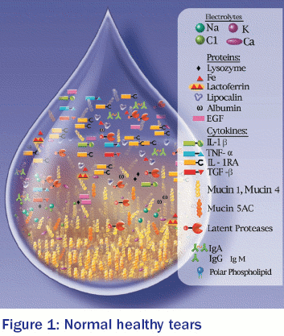
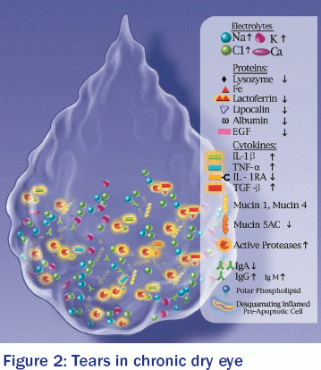

☰
☰
☰
☰
Millions of Americans suffer from dry eye. There are two main causes: decreased secretion of tears by the lacrimal (tear-producing) glands and loss of tears due to excess evaporation. Both can lead to ocular surface discomfort, often described as feelings of dryness, burning, a sandy/gritty sensation, or itchiness. Visual fatigue, sensitivity to light, and blurred vision are also characteristic of dry eye.
 Normal healthy tears contain a complex mixture of proteins and other components that are essential for ocular health and comfort (Figure 1). Tears are important because they:
• Provide nutrients and support the health of cells in the cornea.
• Lubricate the ocular surface.
• Protect the exposed surface of the eye from infections.
Clear vision depends on even distribution of tears over the ocular surface. For Sjögren’s patients, inflammation of tear-secreting glands reduces tear production, resulting in chronic dry eye. In addition, changes in the composition of tears contribute to dry eye (Figure 2). In people with dry eye, thin spots in the tear film may appear and the tears no longer adequately protect and support the health of ocular surface tissues.